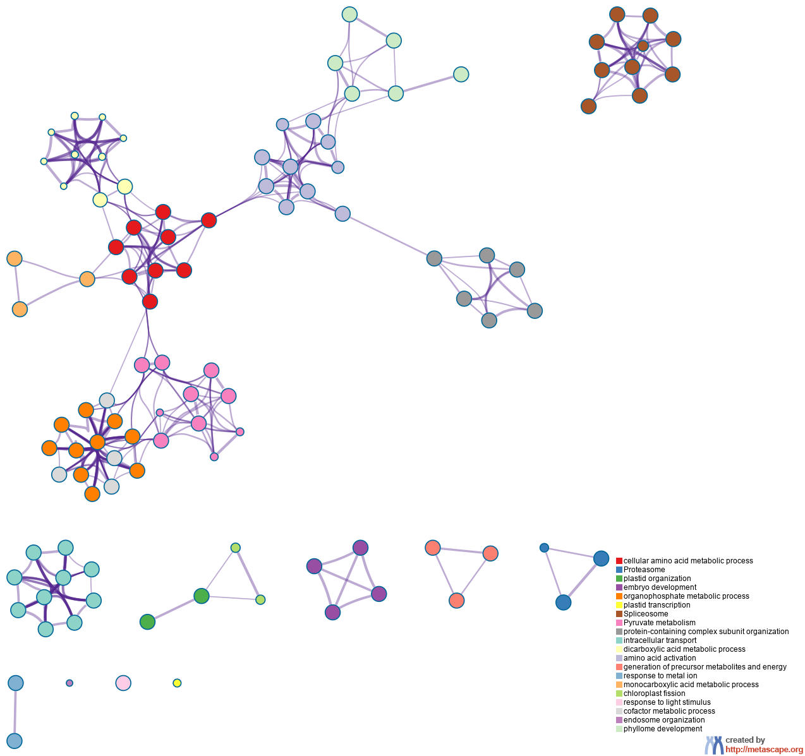
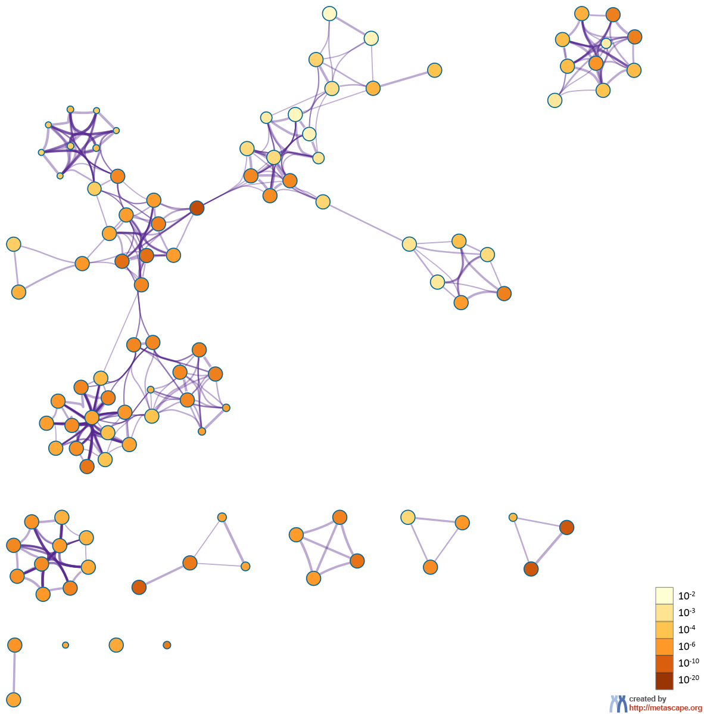
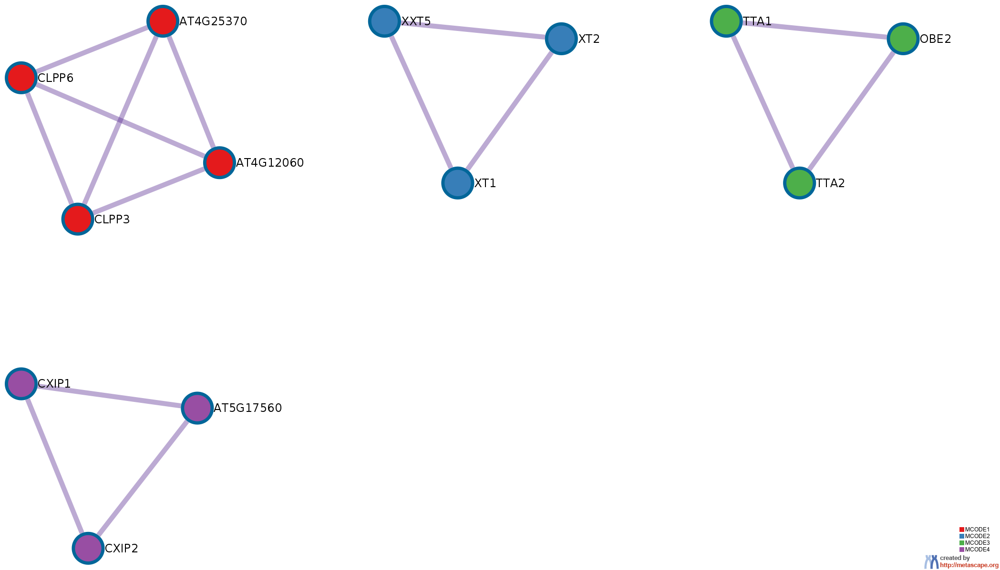

Metascape Gene List Analysis Report
metascape.org1Bar Graph Summary
Figure 1. Bar graph of enriched terms across input gene lists, colored by p-values.
{kind=link}
{kind=link}
Gene Lists
User-provided gene identifiers are first converted into their corresponding A. thaliana Entrez gene IDs using the latest version of the database (last updated on 2020-09-16). If multiple identifiers correspond to the same Entrez gene ID, they will be considered as a single Entrez gene ID in downstream analyses. The gene lists are summarized in Table 1.Table 1. Statistics of input gene lists.
| Name | Total | Unique |
|---|---|---|
| WS_c1_which_mclass____4___1_ | 2749 | 2745 |
Gene Annotation
The following are the list of annotations retrieved from the latest version of the database (last updated on 2020-09-16) (Table 2).Table 2. Gene annotations extracted
| Name | Type | Description |
|---|---|---|
| Gene Symbol | Description | Primary HUGO gene symbol. |
| Description | Description | Short description. |
| Biological Process (GO) | Function/Location | Descriptions summarized based on gene ontology database, where up to three most informative GO terms are kept. |
| Kinase Class (UniProt) | Function/Location | Detailed kinase classes. |
| Protein Function (Protein Atlas) | Function/Location | Protein Function (Protein Atlas) |
| Subcellular Location (Protein Atlas) | Function/Location | Sucellular Location (Protein Atlas) |
| Drug (DrugBank) | Genotype/Phenotype/Disease | Drug information for the given gene as target. |
| Canonical Pathways | Ontology | Canonical Pathways |
| Hallmark Gene Sets | Ontology | Hallmark Gene Sets |
Pathway and Process Enrichment Analysis
For each given gene list, pathway and process enrichment analysis has been carried out with the following ontology sources: KEGG Pathway, GO Biological Processes, Reactome Gene Sets, Canonical Pathways, CORUM, TRRUST, DisGeNET, PaGenBase, Transcription Factor Targets and COVID. All genes in the genome have been used as the enrichment background. Terms with a p-value < 0.01, a minimum count of 3, and an enrichment factor > 1.5 (the enrichment factor is the ratio between the observed counts and the counts expected by chance) are collected and grouped into clusters based on their membership similarities. More specifically, p-values are calculated based on the accumulative hypergeometric distribution2, and q-values are calculated using the Banjamini-Hochberg procedure to account for multiple testings3. Kappa scores4 are used as the similarity metric when performing hierachical clustering on the enriched terms, and sub-trees with a similarity of > 0.3 are considered a cluster. The most statistically significant term within a cluster is chosen to represent the cluster.Table 3. Top 20 clusters with their representative enriched terms (one per cluster). "Count" is the number of genes in the user-provided lists with membership in the given ontology term. "%" is the percentage of all of the user-provided genes that are found in the given ontology term (only input genes with at least one ontology term annotation are included in the calculation). "Log10(P)" is the p-value in log base 10. "Log10(q)" is the multi-test adjusted p-value in log base 10.
| GO | Category | Description | Count | % | Log10(P) | Log10(q) |
|---|---|---|---|---|---|---|
| GO:0006520 | GO Biological Processes | cellular amino acid metabolic process | 113 | 4.71 | -13.98 | -10.18 |
| ath03050 | KEGG Pathway | Proteasome | 30 | 1.25 | -11.87 | -8.54 |
| GO:0009657 | GO Biological Processes | plastid organization | 81 | 3.38 | -10.50 | -7.30 |
| GO:0009790 | GO Biological Processes | embryo development | 124 | 5.17 | -8.59 | -5.63 |
| GO:0019637 | GO Biological Processes | organophosphate metabolic process | 128 | 5.34 | -8.43 | -5.53 |
| GO:0042793 | GO Biological Processes | plastid transcription | 10 | 0.42 | -8.00 | -5.20 |
| ath03040 | KEGG Pathway | Spliceosome | 53 | 2.21 | -7.80 | -5.11 |
| ath00620 | KEGG Pathway | Pyruvate metabolism | 31 | 1.29 | -7.77 | -5.11 |
| GO:0043933 | GO Biological Processes | protein-containing complex subunit organization | 142 | 5.92 | -7.71 | -5.10 |
| GO:0046907 | GO Biological Processes | intracellular transport | 135 | 5.63 | -7.43 | -4.90 |
| GO:0043648 | GO Biological Processes | dicarboxylic acid metabolic process | 31 | 1.29 | -7.23 | -4.85 |
| GO:0043038 | GO Biological Processes | amino acid activation | 24 | 1.00 | -7.21 | -4.85 |
| GO:0006091 | GO Biological Processes | generation of precursor metabolites and energy | 74 | 3.08 | -6.88 | -4.58 |
| GO:0010038 | GO Biological Processes | response to metal ion | 93 | 3.88 | -6.32 | -4.10 |
| GO:0032787 | GO Biological Processes | monocarboxylic acid metabolic process | 102 | 4.25 | -6.17 | -3.97 |
| GO:0010020 | GO Biological Processes | chloroplast fission | 12 | 0.50 | -5.51 | -3.45 |
| GO:0009416 | GO Biological Processes | response to light stimulus | 142 | 5.92 | -5.25 | -3.23 |
| GO:0051186 | GO Biological Processes | cofactor metabolic process | 104 | 4.34 | -5.22 | -3.20 |
| GO:0007032 | GO Biological Processes | endosome organization | 8 | 0.33 | -5.13 | -3.13 |
| GO:0048827 | GO Biological Processes | phyllome development | 108 | 4.50 | -4.72 | -2.78 |
Figure 2. Network of enriched terms: (a) colored by cluster ID, where nodes that share the same cluster ID are typically close to each other; (b) colored by p-value, where terms containing more genes tend to have a more significant p-value.
|  |  |
|
|
|
Protein-protein Interaction Enrichment Analysis
For each given gene list, protein-protein interaction enrichment analysis has been carried out with the following databases: BioGrid6. The resultant network contains the subset of proteins that form physical interactions with at least one other member in the list. If the network contains between 3 and 500 proteins, the Molecular Complex Detection (MCODE) algorithm7 has been applied to identify densely connected network components. The MCODE networks identified for individual gene lists have been gathered and are shown in Figure 3. Pathway and process enrichment analysis has been applied to each MCODE component independently, and the three best-scoring terms by p-value have been retained as the functional description of the corresponding components, shown in the tables underneath corresponding network plots within Figure 3.Figure 3. Protein-protein interaction network and MCODE components identified in the gene lists.
|  | |||||||||||||||||||||||||||||||||||
|
| |||||||||||||||||||||||||||||||||||
|
Reference
- Zhou et al., Metascape provides a biologist-oriented resource for the analysis of systems-level datasets. Nature Communications (2019) 10(1):1523.
- Zar, J.H. Biostatistical Analysis 1999 4th edn., NJ Prentice Hall, pp. 523
- Hochberg Y., Benjamini Y. More powerful procedures for multiple significance testing. Statistics in Medicine (1990) 9:811-818.
- Cohen, J. A coefficient of agreement for nominal scales. Educ. Psychol. Meas. (1960) 20:27-46.
- Shannon P. et al., Cytoscape: a software environment for integrated models of biomolecular interaction networks. Genome Res (2003) 11:2498-2504.
- Stark C. et al. BioGRID: a general repository for interaction datasets. Nucleic Acids Res. (2006) 34:D535-539.
- Bader, G.D. et al. An automated method for finding molecular complexes in large protein interaction networks. BMC bioinformatics (2003) 4:2.